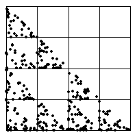

4. (a) Here is the Driven IFS.
|  |
| All the data points lie in bins 1, 2, and 3, so in the driven IFS only transformations T1, T2 and T3 are applied. |
| All combinations of these transformations generate the gasket with
vertices |
| The data do not appear to exhibit a pattern within these bins, so the driven IFS is likely a fairly complete subset of that gasket. |
Return to Exercises.